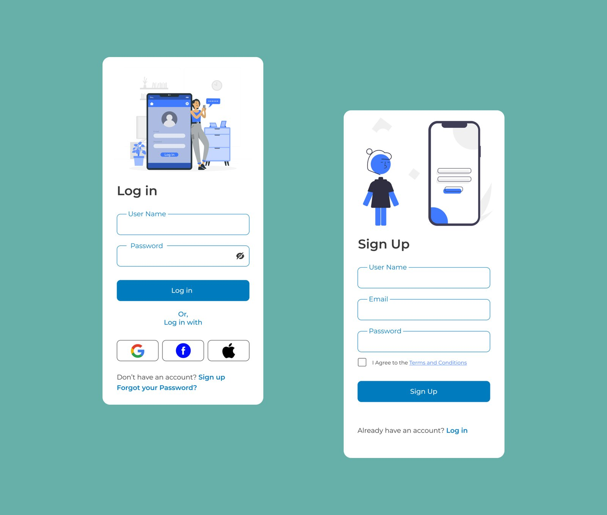

← Back to portfolio
Daily UI Challenge
Type: Design exercise (Figma) · Scope: Day 1–9
A running set of UI exercises in the style of the "Daily UI" challenge — one screen per day, each tackling a different common UI pattern (login, sign up, and onward through Day 9).
Day 1 — Log in · Day 2 — Sign up
Consistent illustration style and component language (rounded inputs, single accent blue) carried across both screens.

Notes
- Good showcase of range and consistency — same design system held across many small, self-contained problems rather than one large flow.
Figma file: https://www.figma.com/design/N8V3yzesguyQ1dGUYwB7T1/